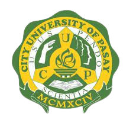
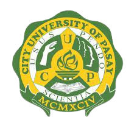

CITY UNIVERSITY OF PASAY CUP
(Pamantasan Lungsod ng Pasay)
Pasadeña St., F.B. Harrison Pasay City, M.M
Tel. No. 88846-75-74
COURSES OFFERED
TWO YEAR COURSES
ASSOCIATE IN COMPUTER TECHNOLOGY
MASTER OF ARTS IN EDUCATIONAL MANAGEMENT
MASTER IN PUBLIC GOVERNANCE
FOUR YEAR COURSES
BACHELOR OF SCIENCE IN BUSINESS ADMINISTRATION
BACHELOR OF SCIENCE IN OFFICE ADMINISTRATION
BACHELOR OF SCIENCE IN ELEMENTARY EDUCATION
BACHELOR OF SCIENCE IN SECONDARY EDUCATION
BACHELOR OF ARTS AND POLITICAL SCIENCE
BACHELOR IN PUBLIC GOVERNANCE
BACHELOR OF SCIENCE IN NURSING